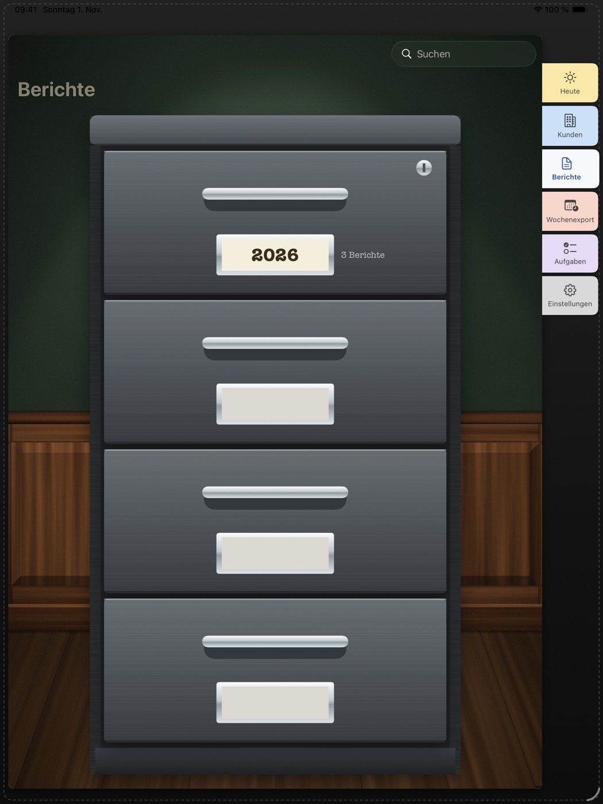

Besuchsberichte ist für alle, die nach dem Kundentermin keine Zeit für lange Berichte haben. Du notierst nur das Wichtigste, als Stichpunkte, Diktat oder Handschrift mit dem Apple Pencil. Die KI auf deinem Gerät schreibt daraus den fertigen Bericht.

- Vier Längen: Mini, Midi, Max und XXL mit Abschnitten
- Nichts wird erfunden: Was nicht in deinen Notizen steht, kommt nicht in den Bericht
- Termine mit Adresse aus dem Kalender, Gesprächspartner aus deinen Kontakten, Fotos vom Termin
- Aktenschrank mit Jahr, Monat, Kalenderwoche und Tag
- Wochenexport als PDF auf DIN A4 oder A5
- KI, Diktat und PDF laufen auf dem Gerät. Kein Konto, keine Werbung, kein Tracking
- Passt zu Planer CRM Light, funktioniert aber auch ganz für sich
Voraussetzungen für die KI
Apple Intelligence auf iPhone 15 Pro oder neuer (alle iPhone 16 und 17), iPad mit M1 oder neuer, iPad mini mit A17 Pro oder Mac mit M1 oder neuer. Dazu iOS, iPadOS oder macOS 26 oder neuer, Apple Intelligence eingeschaltet und Deutsch als Sprache. Auf anderen Geräten läuft die App ebenfalls, ordnet deine Notizen aber nur, ohne sie auszuformulieren.